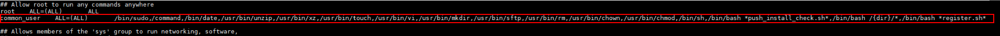

通过自动推送方式安装客户端时，如果“用户类型”配置为“普通用户”，需要先将该普通用户添加到sudoers中，否则注册客户端将失败。本章节以EulerOS为例进行说明。
操作步骤
- 使用PuTTY工具以root账户登录待安装客户端的主机。
- 执行以下命令，查找sudoers配置文件的目录。
whereis sudoers
回显类似如下，其中“/etc/sudoers”为sudoers配置文件的目录。
sudoers: /etc/sudoers /etc/sudoers.d /uer/share/man/man5/sudoers.5.gz
- 执行以下命令，查询sudoers配置文件权限。
ll /etc/sudoers
回显类似如下，表示root用户仅有sudoers配置文件的只读权限，则请执行4为root用户添加该配置文件的可写权限。如已有该配置文件的可写权限，则直接执行5。
-r--r-----. 1 root root 20724 Nov 19 21:04 /etc/sudoers
- 执行以下命令，为sudoers配置文件添加可写权限。
chmod u+w /etc/sudoers
- 执行以下命令，备份源文件。
mkdir /etc/backup_sudoers
cp /etc/sudoers /etc/backup_sudoers
- 执行以下命令，打开sudoers配置文件。
vim /etc/sudoers
- 检查配置文件中是否存在“Defaults requiretty”字段。如果存在，请删除该配置。

启用“Defaults requiretty”字段，则只能通过实际终端登录主机后才能执行sudo命令，会导致自动推送安装客户端失败。
- 增加以下内容到配置文件，修改完成后保存并退出。以普通用户common_user为例，实际请根据安装客户端时的普通用户名替换。

- 请严格按照要求修改配置文件，否则可能导致自动推送安装客户端失败或sudo命令执行失败。
- 在配置文件中增加的以下内容为一整行分三列，第一列与第二列间隔4个字符，第二列与第三列间隔7个字符。如果拷贝以下内容至配置文件中存在换行时，请手动删除换行。
- 如果采用sudo非免密方式，请增加以下内容到配置文件：
common_user ALL=(ALL) /bin/sudo,/bin/command,/bin/date,/usr/bin/unzip,/usr/bin/xz,/usr/bin/touch,/usr/bin/vi,/usr/bin/mkdir,/usr/bin/sftp,/usr/bin/rm,/usr/bin/chown,/usr/bin/chmod,/bin/sh,/bin/bash *push_install_check.sh*,/bin/bash /{dir}/*,/bin/bash *register.sh*示例如下：

- 如果采用sudo免密方式，请增加以下内容到配置文件：
common_user ALL=(ALL) NOPASSWD:/bin/sudo,/bin/command,/bin/date,/usr/bin/unzip,/usr/bin/xz,/usr/bin/touch,/usr/bin/vi,/usr/bin/mkdir,/usr/bin/sftp,/usr/bin/rm,/usr/bin/chown,/usr/bin/chmod,/bin/sh,/bin/bash *push_install_check.sh*,/bin/bash /{dir}/*,/bin/bash *register.sh*
- 如果执行了4修改sudoers配置文件权限，则请执行本步骤，删除sudoers配置文件的可写权限。否则，请跳过本步骤。
chmod u-w /etc/sudoers
- 查看配置文件，确认“Defaults requiretty”字段是否删除，以及8中添加的用户是否存在。
cat /etc/sudoers